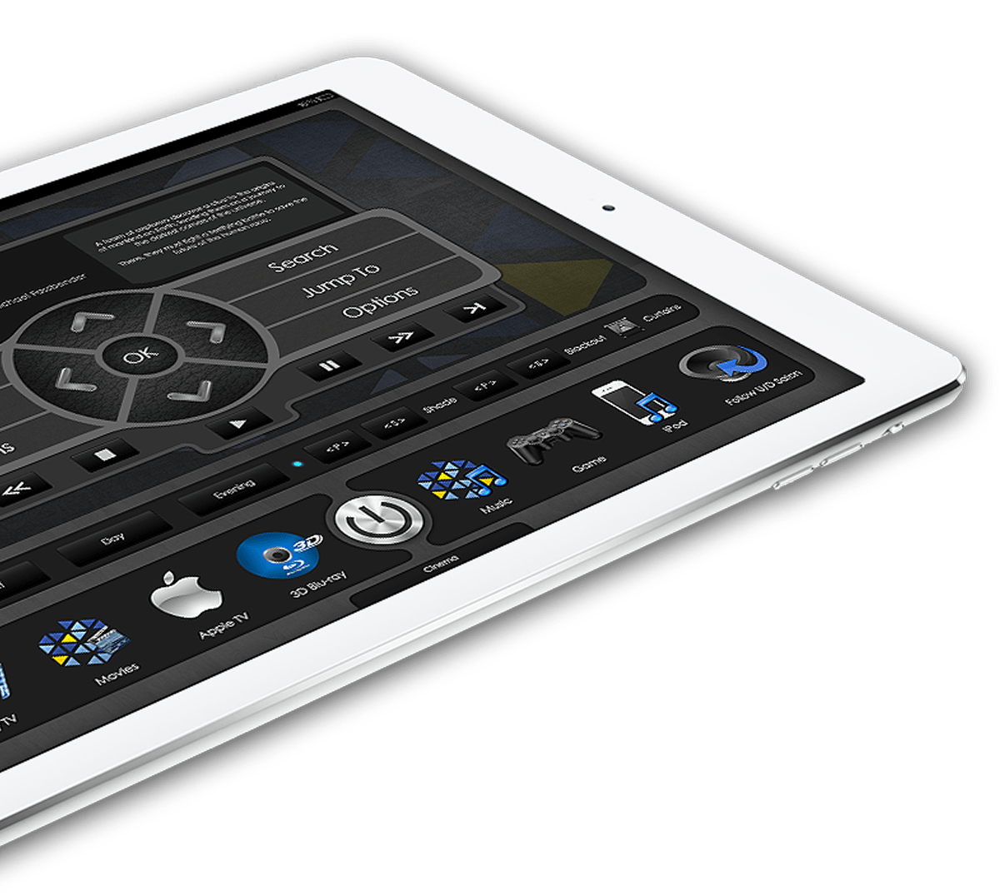
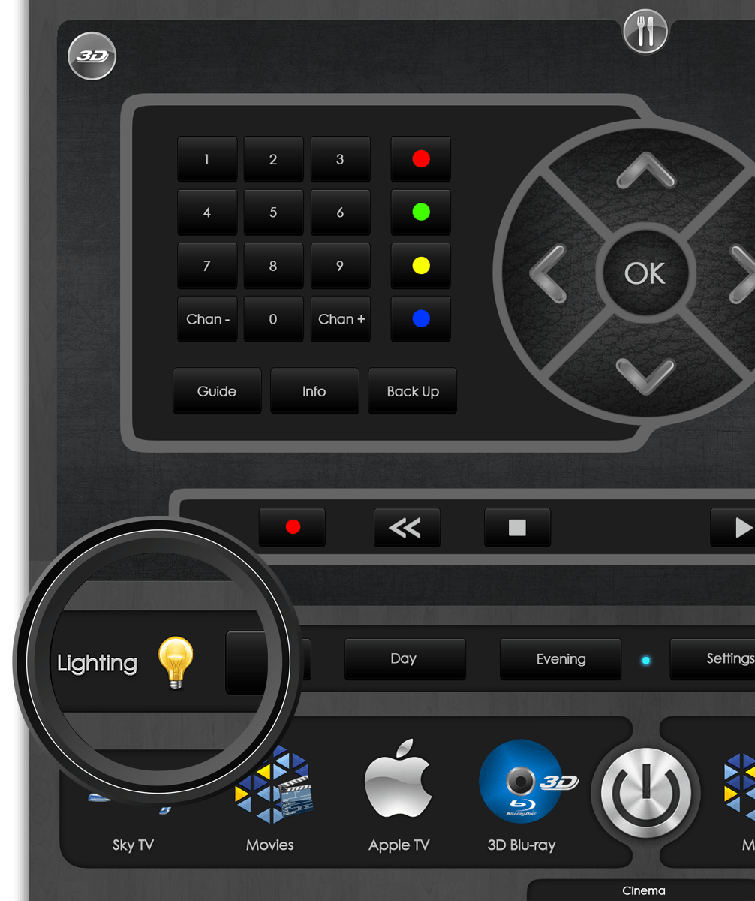
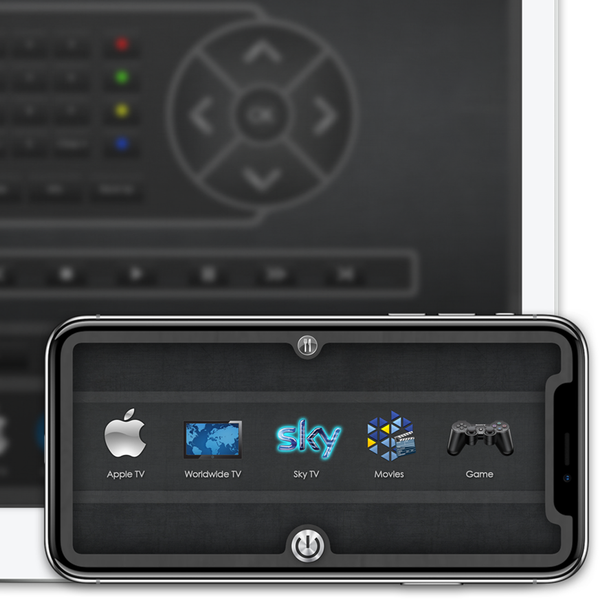

Perfect Design
Easy to use... A great experience.
Here at YachtLabs we create bespoke control interface designs which can be used with various control programs and devices such as the amazing Apple iPad Air and iPad Mini and even the new iPad Pro!
Many companies who create touch panel projects for a yacht’s AV system fail to understand that the design of a luxury interior should filter down to every component on-board including the interface which a guest will interact with the most when using their AV systems, which is usually every single day.
We use a variety of features and techniques to make our templates unique, such as multi touch source menus, one touch areas for functions which are used the most and beautifully designed modules and icons for each source you have onboard.
Retina Ready
Bespoke. High resolution graphics.
At YachtLabs we understand that every part of your luxury interior should be perfect. Down to every detail. Our designs include a feature that many others don’t, True Retina quality graphics.
Unlike other design-houses which may create a template for a certain sized device then shrink or enlarge it, which can create unsightly pixelating or blurriness. Our creations are custom made for the device you are planning to use.
Our designs are built from the ground up and based upon the stunning “Liquid Retina display” We can also prepare interface designs for the new iPad Pro with it’s dazzling 2732 x 2048 (264ppi) and of course, we use every single one of the 5.6 million pixels in our Retina designs.
Producing all of our templates in this way means our templates are clear, sharp, are extremely beautiful and easy to use. They are the perfect compliment to your Super-yacht.


Multiple Devices
Your bespoke design. Everywhere.
Although our custom interface designs look great on Retina devices from Apple we can also tailor our creations to work on any device you desire wether it be the smaller iPhone, Android Tablet or Smartphone.
When our templates are installed on smaller devices (such as a smartphone) we take great care when considering how the device will be used eg: a smaller screen needs larger buttons to use it properly.
We also take into consideration the touch technology your device might use such as swipe, pinch etc to create unique interactions.
All these design features enable us to create intuitive templates which anybody can use within seconds of picking up the device.
Effortless Rollout.
Highly organised, Easy to find.
When you're working with high resolution files we know organisation is key, that's why all our templates are highly organised with all elements of the design specific to the screen you're working on in one place.
This makes our bespoke templates not only very visually appealing and complex but also incredibly easy to roll-out into your control systems software such as VTPro, ultimately saving you valuable time & money.